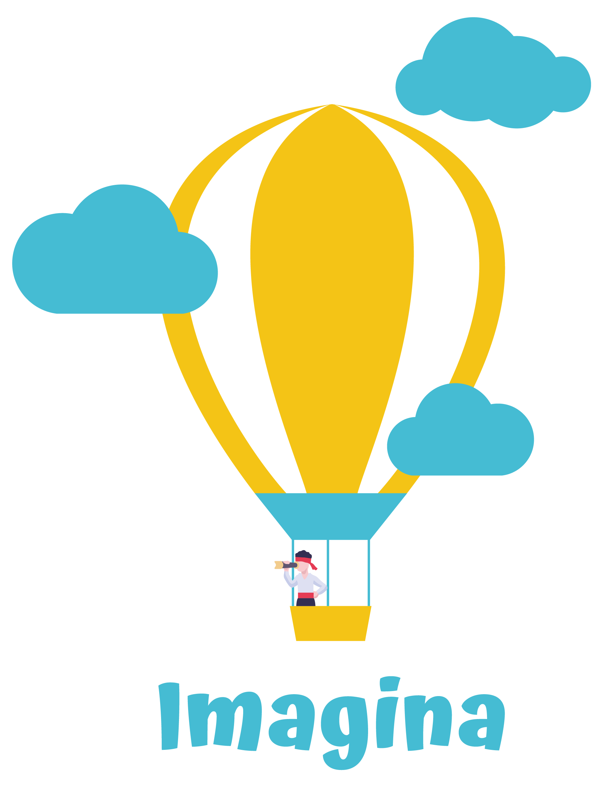

Cada mente tiene su propio vuelo.
IMAGINA es un espacio profesional que articula
psicopedagogía, formación e investigación en torno
a los procesos de aprendizaje, con especialización en
Altas Habilidades/Superdotación, trastornos del neurodesarrollo
y otras necesidades vinculadas a la educación.
Un espacio para comprender, acompañar y seguir aprendiendo.

Hola, soy Mariana
Soy Magíster en Educación, Licenciada en Psicopedagogía y Profesora de Química, especialista en Dificultades del Aprendizaje y Altas Habilidades/Superdotación.
Desarrollo mi trabajo en psicopedagogía y docencia de grado y posgrado, articulando la práctica, la formación y la investigación para comprender los procesos de aprendizaje desde una mirada integral y basada en evidencia.
A lo largo de mi recorrido he trabajado con niños, niñas y adolescentes, familias, docentes e instituciones educativas en procesos de evaluación, intervención, orientación y formación.
IMAGINA nace de este recorrido y de una convicción: comprender cómo aprende cada persona es el primer paso para acompañarla mejor.
Desde IMAGINA a tu email
Ideas, evidencia y reflexiones para comprender mejor cómo aprendemos.
¡Gracias! Revisá tu email, te va a llegar una confirmación.
Un espacio para comprender, acompañar y seguir aprendiendo
En IMAGINA trabajo con familias, docentes y profesionales que buscan comprender mejor cómo aprendemos, encontrar herramientas para acompañar los procesos de aprendizaje y seguir construyendo conocimiento.
Espacio psicopedagógico
Evaluación e intervención psicopedagógica en:
- Altas Habilidades/Superdotación.
- Trastornos del Neurodesarrollo.
Formación y Supervisión profesional
- Asesoramiento a familias.
- Capacitaciones para docentes y organizaciones.
- Supervisiones profesionales y grupos de estudio.
Investigación
Divulgación de evidencia científica.
Resolvamos tus dudas
Lo que las familias, las escuelas y los colegas suelen preguntar antes de escribirme.
¿Te quedó alguna duda?
Escribime y lo vemos.
Familias Mi hijo/a tiene dificultades en la escuela, ¿cuándo conviene consultar?
Cuando las dificultades se sostienen en el tiempo y empiezan a afectar los aprendizajes, el ánimo o la relación con la escuela. Por ejemplo, si cuesta leer o escribir, atender u organizarse, o si aparece mucha frustración. También conviene consultar si aprende muy rápido y se aburre o se desmotiva. No hace falta esperar a que "se note más". Cuanto antes se comprende cómo aprende, antes se lo puede acompañar.
Familias ¿Qué es una evaluación psicopedagógica y cómo es el proceso?
Es un proceso para comprender cómo aprende una persona, qué le resulta fácil, qué le cuesta y por qué. Incluye entrevistas con la familia, sesiones con el niño, niña o adolescente y, cuando es posible, contacto con la escuela. Se usan técnicas estandarizadas, pero también otras pruebas de criterio, metodología del juego, observación del cuaderno de clase y observación clínica, entre otras. Termina con una devolución a la familia y un informe escrito con sugerencias concretas para la casa y el aula.
Familias ¿Necesito un diagnóstico o una derivación previa?
No, podés consultar directamente. Si durante el proceso aparece la necesidad de otra mirada (psicología, neuropediatría, fonoaudiología u otras), te lo planteo y te oriento.
Familias ¿Qué pasa después de la evaluación?
Te hago una devolución y te entrego un informe. Después decidimos juntos los pasos siguientes, que pueden ser ajustes en la escuela, una intervención psicopedagógica, derivaciones o un seguimiento. Si la familia lo autoriza, también comparto las sugerencias con la escuela. La información de las sesiones y del informe es confidencial, y solo se comparte con la escuela u otros profesionales con el acuerdo de la familia.
Altas Habilidades/Superdotación ¿Qué son las Altas Habilidades/Superdotación?
Son comportamientos que surgen de la interacción de habilidades por encima de la media, creatividad y compromiso con la tarea, y que suelen necesitar propuestas educativas ajustadas. No se trata solo de sacar buenas notas. Un proceso de evaluación analiza las habilidades y procesos cognitivos, los intereses y el bienestar emocional.
Escuelas y colegas ¿Ofrecés capacitaciones o asesoramiento a escuelas e instituciones?
Sí. Diseño talleres, capacitaciones y asesoramiento técnico para docentes, equipos e instituciones, a medida de cada necesidad. Algunos temas posibles, solo a modo de ejemplo, son Altas Habilidades/Superdotación, inclusión, DUA y neurodesarrollo. Si necesitás otro tema, escribime con tu propuesta y vemos cómo trabajarla.
Escuelas y colegas ¿En qué consiste la supervisión profesional?
Es un espacio para colegas que quieren pensar sus casos con otra mirada, por ejemplo para analizar evaluaciones e informes, definir objetivos de intervención o decidir cambios de tratamiento. Puede ser individual o en grupos de estudio.
Cómo empezar ¿Cómo pido una consulta y cuánto cuesta?
Escribime por WhatsApp o desde "Conversemos" y coordinamos una primera conversación para entender qué te preocupa y cómo puedo acompañarte. En esa instancia también vemos la modalidad, los horarios y los costos.
¿Te quedó alguna duda?
Escribime y lo vemos.
Últimas publicaciones
Ideas, preguntas y evidencia: contenidos para pensar el aprendizaje,
el desarrollo y la educación desde una mirada psicopedagógica,
basada en evidencia.
Lo que dicen de Imagina
Comentarios de familias, docentes y colegas que trabajaron conmigo.
Conversemos
¿Tenés una consulta, una propuesta de formación, una inquietud profesional o una idea para desarrollar en conjunto?
Escribime y vemos cómo podemos trabajarla.